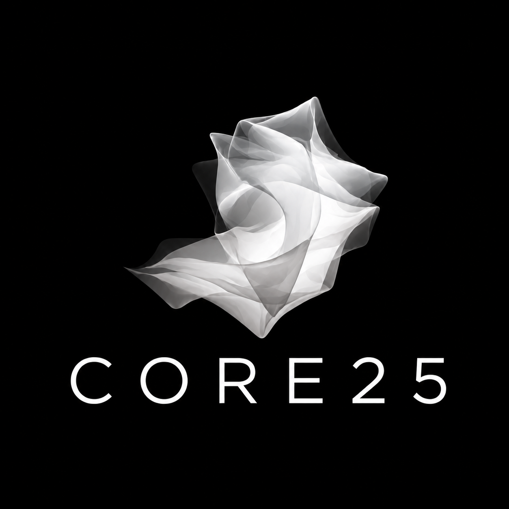

Digital Product Development
Purposeful web and mobile products designed around real user needs.
Core25 builds digital products, delivers technology projects and helps organisations turn complex ideas into practical outcomes.

The best technology does more than automate work. It creates clarity, improves experiences and enables organisations to achieve more.
Core25 brings strategy, delivery and people together to build solutions that are practical, purposeful and ready for the real world.
A focused set of capabilities designed to help organisations make better technology decisions and deliver with confidence.
Purposeful web and mobile products designed around real user needs.
Clear, independent advice that connects technology investment to business value.
Structured leadership for complex technology and transformation initiatives.
Turning complex requirements into practical, measurable solutions.
Helping people understand, adopt and sustain new ways of working.
Improving operations, customer experience and long-term performance.
Every solution begins with the outcome it needs to create.
Clear thinking, disciplined execution and no unnecessary complexity.
Technology decisions grounded in value, risk and long-term sustainability.
Technology works best when it makes life and work better for people.
Understand the challenge, people, systems and desired outcome.
Shape a practical solution with clear priorities and decisions.
Deliver with structure, transparency and strong stakeholder engagement.
Support adoption, capability and sustainable long-term value.
Core25 is also the company behind purpose-led digital products designed to strengthen connection, learning and community.

Whether you are shaping a new product, delivering a transformation or improving an existing service, Core25 can help you move forward with clarity.
Start a conversation